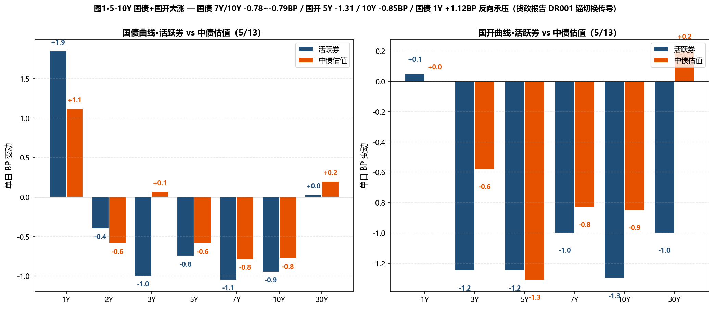
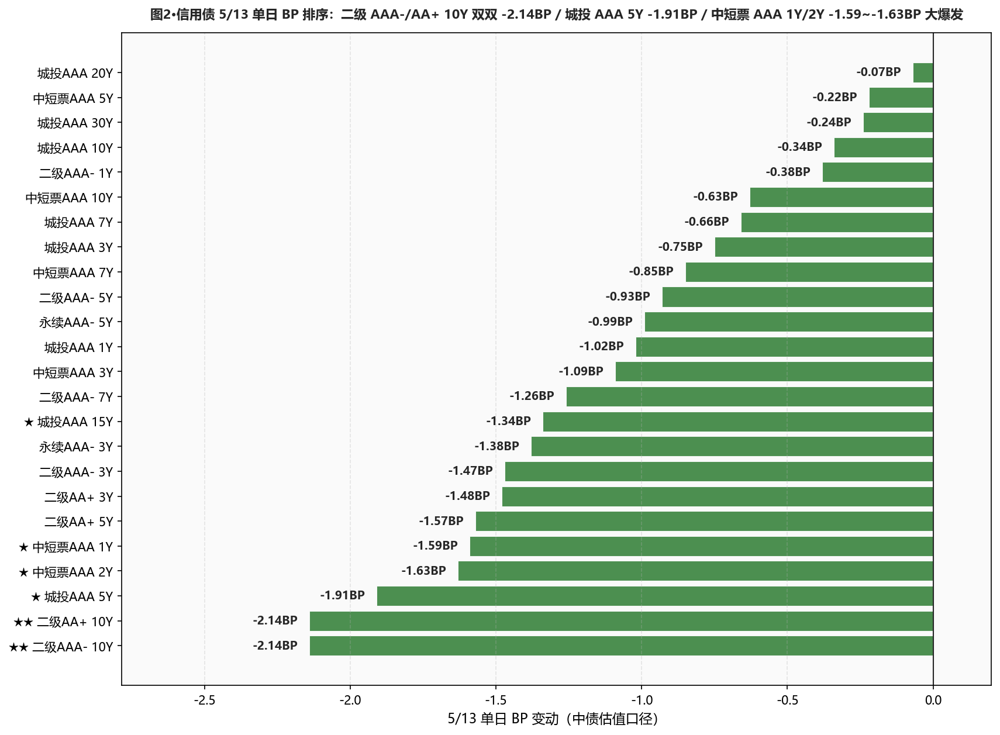
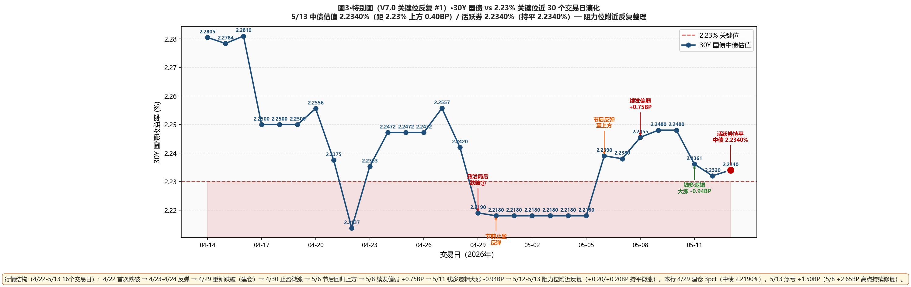

市场定性 货政报告隐性转鹰（删降准降息+政策锚切换 DR001）+ 短端承压 + 5-10Y 信用债二级板块第三日大爆发—— 中信证券解读货政报告：删除"降准降息"四字（短期降息降准实施概率小）+ "引导隔夜利率附近政策位"或表明政策利率锚正式从 DR007 切换至 DR001 + 对债市杠杆与期限错配的监管或趋严—— 政策框架隐性转鹰； 短端反应：国债 1Y 中债估值 +1.12BP（活跃券 +1.85BP 更大幅度）—— 5/12 +0.48BP 后第二日继续上行、5-10Y 国债-1Y 期限利差 56.47 → 54.57BP（-1.90BP）短端反向被压缩； 但债市中段仍偏强：5-10Y 国债+政金债领涨 — 5Y 国债 -0.59 / 7Y -0.79 / 10Y -0.78BP；国开 3Y -0.58 / 5Y -1.31 / 7Y -0.83 / 10Y -0.85BP； 信用债二级板块第三日大爆发 — ★★ 二级 AAA- 10Y -2.14BP / 二级 AA+ 10Y -2.14BP 双双单日最强 / 城投 AAA 5Y -1.91BP（连续 2 日累计 -3.64BP）/ 城投 AAA 15Y -1.34BP / 中短票 AAA 1Y -1.59 / 2Y -1.63BP（短端大涨）/ 永续 AAA- 3Y -1.38BP； 30Y 仍持平微涨：国债 30Y +0.20BP（活跃券 +0.03BP）/ 国开 30Y +0.20BP / 国债 20Y 持平 — 长端动力衰减；10Y 国开-国债隐含税率从 6.46BP 压至 6.39BP（-0.07BP，第三日维持近 30 日低位）。 资金面进一步走宽（与政策锚切换信号矛盾、显示央行实际操作未跟随报告口径）：DR001 +0.87BP 至 1.2670%（PDF "上行约 1bp 至 1.26% 上方"）/ DR007 -0.69BP 至 1.2942%（PDF "刷新阶段低点 1.29% 平台")/ DR007-DR001 点差 2.72BP（< 5BP，进一步收窄）。
- ✅ 30Y 国债建仓继续修复至浮亏 +1.50BP本行 4/29 建仓 30Y 国债 3pct（中债 2.2190%）；5/8 浮亏一度 +2.65BP；5/13 中债 2.2340%（浮亏 +1.50BP）；30Y 已连续 2 日持平阻力位附近、活跃券 2.2340% 距 2.23% 仅 0.33BP；维持仓位不补不止、等待 5/15 MLF 续做信号
- ✅ 二级 AAA- 7-10Y 加仓策略大幅命中5/12 提示"二级 AAA- 3-10Y 加仓节奏继续命中"；5/13 二级 AAA- 7Y -1.26 / 10Y -2.14BP 双双大幅领涨；本行 5Y 二级 28-30% + 5/12 已新增 7Y/10Y 2-3pct；策略价值显著兑现、5/13 不再加仓、节奏维持
- ✅ 5-7Y 国开仓位切换 7Y/30Y 命中5/12 提示"3pct 仓位从 5Y 切换至 7Y 国开"；5/13 国开 7Y -0.83BP / 10Y -0.85BP 全段领涨；切换至 7Y 后捕获额外 -0.48BP 收益、维持仓位；隐含税率 6.39BP 维持近 30 日低位、不再加仓
- ⚠️ 城投 AAA 短端 + 中短票 AAA 1Y/2Y 反弹大涨、长端切换确认5/12 提示"配置盘从城投短端切换至 7Y/10Y"；5/13 城投 1Y -1.02 / 5Y -1.91BP 反弹 + 中短票 AAA 1Y -1.59 / 2Y -1.63BP 大涨；"短端配置切换"逻辑已 180° 反转 — 短端被快速买回；保持现仓 15-18%、不主动加仓城投短端（货政报告 DR001 锚切换信号可能对短端构成中长期约束）
- ⚠️ 杠杆 105-108% 维持、关注 5/15 MLF 续做 + 监管细则中信解读"对债市杠杆与期限错配的监管或趋严、不排除从杠杆/期限方面出台新的管理规定"；R-DR007 5.47BP 维持温和分层、R-DR001 1.82BP；不主动上调杠杆至 110%、等 5/15 MLF 规模 + 监管口径明朗化
- ① 30Y国债 vs 2.23% ⚠️ 仍上方贴近：活跃券 2.2340%（上方 0.33BP）/ 中债估值 2.2340%（上方 0.40BP）→连续 3 日在阻力位附近反复整理、等待 5/15 MLF
- ② 10Y国债 vs 1.75% ⚠️ 双口径同时已突破下方：活跃券 1.7420%（下方 0.95BP）/ 中债估值 1.7514%（上方 0.14BP）→活跃券领先跌破阈值！中债估值距 1.75% 仅 +1.14BP；若 5/14 中债估值跌破、可加仓 10Y 国债 2pct
- ③ R-DR007 利差 >15BP ○ 未触发：仍温和分层：当前 5.47BP（接近 5BP 温和分层下限）→维持 105-108% 杠杆
- ④ 10Y中短票AAA-3Y 利差 ≤25BP ○ 未触发：当前 47.33BP（+0.46BP）、距阈值 22.33BP→10Y 比 3Y 跑赢、利差走阔
- ⑤ 30Y-10Y 城投AAA 利差 ≤25BP ○ 未触发：当前 30.37BP（+0.10BP）、距阈值 5.37BP→城投 10Y -0.34 vs 30Y -0.24BP 利差微幅走阔
A 段·详细数据
① 资金面 Wind EDB API + Wind 综述 PDF
资金面进一步走宽（与政策信号矛盾、显示央行实际操作未跟随报告口径转鹰）——DR001 +0.87BP 至 1.2670%（PDF "加权上行约 1bp 至 1.26% 上方"、距 OMO -13.30BP）；DR007 -0.69BP 至 1.2942%（PDF "7 天期加权下行至 1.29% 平台、刷新阶段低点"、距 OMO -10.58BP）；DR007-DR001 点差 2.72BP（< 5BP、进一步收窄）—— 反映 DR001 上行但 DR007 反而下行；R001 / R007 持平 1.2852% / 1.3489%（注：周二晚 EDB 拉数时 R001/R007 通常未结算、本日报值为占位、待 23:00 后核对）；R-DR007 5.47BP（接近 5BP 温和分层下限）/ R-DR001 1.82BP；NCD AAA 1Y 持平 1.4350% / 3M 持平 1.3550%。央行 5/13 开展 5 亿元 7 天逆回购、260 亿元到期、单日净回笼 255 亿元。交易员评论"资金自发式宽松局面尚未有逆转迹象、虽然隔夜回购利率可能是在'无形之手'引导之下有所反弹、不过超高的供给量依旧反映了当下流动性的充盈程度"；"隔夜报价隐现监管窗口指导痕迹、不过当前隔夜资金供给充裕、机构融出意愿较强、短期流动性难见收敛"；机构指出"国内稳增长货币宽松基调并无转向基础、预计二季度护航政府债券发行、央行或灵活运用多种工具维持宽松环境"。
| 指标 | 5/12 | 5/13 | BP |
|---|---|---|---|
| DR001 (%) | 1.2583 | 1.2670 | +0.87BP |
| DR007 (%) | 1.3011 | 1.2942 | -0.69BP |
| R001 (%) | 1.2852 | 1.2852 | +0.00BP |
| R007 (%) | 1.3489 | 1.3489 | +0.00BP |
| NCD AAA 1Y (%) | 1.4350 | 1.4350 | +0.00BP |
| NCD AAA 3M (%) | 1.3550 | 1.3550 | +0.00BP |
② 利率债 — 中债估值 中债估值 xlsx
呈现"5-10Y 国债国开大涨 + 国债 1Y 反向上行 + 30Y 持平微涨"格局：国债曲线 2-10Y 大幅下行 — 2Y -0.59 / 3Y +0.07 / 5Y -0.59 / 7Y -0.79 / 10Y -0.78 / 15Y -0.39BP；国债 1Y +1.12BP 反向继续大幅承压（5/12 +0.48 + 5/13 +1.12 = 累计 +1.60BP，DR001 锚切换的传导）；30Y +0.20BP / 20Y 持平 — 长端动力衰减；国开债曲线 3-30Y 全段大涨 — 3Y -0.58 / 5Y -1.31 / 7Y -0.83 / 10Y -0.85BP（仅 30Y +0.20BP 跟随国债 30Y）；10Y 隐含税率从 6.46BP 压至 6.39BP（-0.07BP，第三日维持近 30 日低位）；30Y-10Y 国债期限利差 47.28 → 48.26BP（+0.98BP，曲线陡峭化）；10Y-1Y 国债期限利差 56.47 → 54.57BP（-1.90BP，短端被压、中长端走强）。
| 品种 | 5/12 (%) | 5/13 (%) | BP |
|---|---|---|---|
| 国债 1Y | 1.1945 | 1.2057 | +1.12BP |
| 国债 2Y | 1.2776 | 1.2717 | -0.59BP |
| 国债 3Y | 1.2890 | 1.2897 | +0.07BP |
| 国债 5Y | 1.4795 | 1.4736 | -0.59BP |
| 国债 7Y | 1.6349 | 1.6270 | -0.79BP |
| 国债 10Y | 1.7592 | 1.7514 | -0.78BP |
| 国债 15Y | 2.0749 | 2.0710 | -0.39BP |
| 国债 20Y | 2.2500 | 2.2500 | +0.00BP |
| 国债 30Y | 2.2320 | 2.2340 | +0.20BP |
| 国开 1Y | 1.3663 | 1.3663 | +0.00BP |
| 国开 3Y | 1.5137 | 1.5079 | -0.58BP |
| 国开 5Y | 1.6185 | 1.6054 | -1.31BP |
| 国开 7Y | 1.7672 | 1.7589 | -0.83BP |
| 国开 10Y | 1.8238 | 1.8153 | -0.85BP |
| 国开 30Y | 2.3630 | 2.3650 | +0.20BP |
③ 利率债 — 活跃券 DM 查债通 + Wind 综述
活跃券呈现"5-10Y 大幅下行 + 国债 1Y +1.85BP 短端急升"格局：30Y 国债 "26超长特别国债02" PDF +0.10BP 报 2.2340%（DM 综合 +0.03BP 报 2.2333%、距 2.23% 仅上方 0.33BP）/ 10Y 国债 "26附息国债05" -0.80BP 报 1.7420%（活跃券**已重新跌破 1.75%** 阈值 0.80BP，中债估值仍 1.7514% 上方 1.14BP，双口径未共振）/ 10Y 国开 "25国开20" -1.20BP 报 1.8280%；国开债活跃券曲线 3-10Y 全段 -1.00~-1.30BP 大涨 / 国债 7Y/10Y -0.95~-1.05BP 大涨；国债 1Y 活跃券 +1.85BP 报 1.2010% — 短端急速承压、与 PDF "1Y 及 30Y 国债较为疲软" 一致。国债期货主力合约全线上涨 — 30Y 主连 +0.06% 报 113.010 / 10Y +0.09% 报 108.830 / 5Y +0.08% 报 106.340 / 2Y +0.03% 报 102.586。一级市场：财政部发行 91D/1Y/20Y 国债、加权中标 0.9326% / 1.1582% / 2.2496%、全场倍数 3.45 / 2.43 / 4.86、边际倍数 4.2 / 1.57 / 1.18（20Y 边际 1.18 与隔日 30Y 续发偏弱情绪一致、长端配置热度持续下降）；农发行 1Y/3Y/10Y 中标 1.2914% / 1.4443% / 1.7964%、全场倍数 5.88 / 5.42 / 4.98、边际倍数 4.24 / 1.7 / 1.62（短端边际 4.24 较 5/12 1.57 大幅提升、5/13 短端二级承压后一级配置反弹）。
| 品种 | 5/13 收盘 (%) | BP |
|---|---|---|
| 国债 1Y | 1.2010 | +1.85BP |
| 国债 3Y | 1.3925 | -1.00BP |
| 国债 5Y | 1.4250 | -0.75BP |
| 国债 7Y | 1.6170 | -1.05BP |
| 国债 10Y (26附息国债05 PDF -0.80 报 1.7420) | 1.7405 | -0.95BP |
| 国债 30Y (26超长特别国债02 PDF +0.10 报 2.2340) | 2.2333 | +0.03BP |
| 国开 5Y | 1.5650 | -1.25BP |
| 国开 7Y | 1.7100 | -1.00BP |
| 国开 10Y (25国开20 PDF -1.20 报 1.8280) | 1.8270 | -1.30BP |
| 国开 30Y | 2.0850 | -1.00BP |
④ 信用债 — 中债估值 中债估值 xlsx
呈现"二级 10Y 大爆发 + 城投/中短票短端反弹 + 二级永续全面下行"格局： ★★ 二级 AAA- 10Y -2.14BP / 二级 AA+ 10Y -2.14BP（双双信用债 5/13 单日最强、上次同水平在 4/22）—— 5/8 至 5/13 累计：二级 AAA- 10Y -2.32BP / 二级 AA+ 10Y -2.93BP； 二级 AAA- 3Y -1.47 / 5Y -0.93 / 7Y -1.26BP 全段领涨；二级 AA+ 3Y -1.48 / 5Y -1.57BP；永续 AAA- 3Y -1.38 / 5Y -0.99BP； ★ 城投 AAA 5Y -1.91BP（连续 2 日累计 -3.64BP）/ 15Y -1.34BP / 1Y -1.02BP / 3Y -0.75 / 7Y -0.66BP 全段下行—— 5/12 短端修复 + 7/10Y 反向上行 → 5/13 全线下行（配置盘从切换走向全面追入）； ★ 中短票 AAA 1Y -1.59 / 2Y -1.63BP（短端大涨）/ 3Y -1.09 / 7Y -0.85 / 10Y -0.63BP；中短票 AA+ 1Y -1.59BP； 城投 AAA 30Y -0.24BP / 20Y 持平 — 长端动力衰减但仍维持下行。
| 品种 | 5/12 (%) | 5/13 (%) | BP |
|---|---|---|---|
| ★ 中短票AAA 1Y | 1.5133 | 1.4974 | -1.59BP |
| ★ 中短票AAA 2Y | 1.6589 | 1.6426 | -1.63BP |
| 中短票AAA 3Y | 1.7138 | 1.7029 | -1.09BP |
| 中短票AAA 5Y | 1.8671 | 1.8649 | -0.22BP |
| 中短票AAA 7Y | 2.0519 | 2.0434 | -0.85BP |
| 中短票AAA 10Y | 2.1825 | 2.1762 | -0.63BP |
| 城投AAA 1Y | 1.5103 | 1.5001 | -1.02BP |
| 城投AAA 3Y | 1.7297 | 1.7222 | -0.75BP |
| ★ 城投AAA 5Y | 1.8708 | 1.8517 | -1.91BP |
| 城投AAA 7Y | 2.0433 | 2.0367 | -0.66BP |
| 城投AAA 10Y | 2.2262 | 2.2228 | -0.34BP |
| ★ 城投AAA 15Y | 2.3445 | 2.3311 | -1.34BP |
| 城投AAA 20Y | 2.4807 | 2.4800 | -0.07BP |
| 城投AAA 30Y | 2.5289 | 2.5265 | -0.24BP |
| 二级AAA- 1Y | 1.5065 | 1.5027 | -0.38BP |
| 二级AAA- 3Y | 1.7659 | 1.7512 | -1.47BP |
| 二级AAA- 5Y | 1.9539 | 1.9446 | -0.93BP |
| 二级AAA- 7Y | 2.1397 | 2.1271 | -1.26BP |
| ★★ 二级AAA- 10Y | 2.2665 | 2.2451 | -2.14BP |
| 二级AA+ 3Y | 1.7827 | 1.7679 | -1.48BP |
| 二级AA+ 5Y | 1.9761 | 1.9604 | -1.57BP |
| ★★ 二级AA+ 10Y | 2.2788 | 2.2574 | -2.14BP |
| 永续AAA- 3Y | 1.7874 | 1.7736 | -1.38BP |
| 永续AAA- 5Y | 1.9654 | 1.9555 | -0.99BP |
B 段·今日关键事件
① 货政报告政策框架重大转换（中信证券解读）— 政策利率锚切换 DR001 + 删除"降准降息"四字：中信证券称、一季度货币政策执行报告延续 4 月政治局会议基调、认为经济景气边际改善、物价继续呈现温和回升态势；叠加货币政策基调中删除了"降准降息"四字、降息降准短期实施概率小；对债市市场杠杆与期限错配的监管或趋严、不排除从杠杆/期限方面出台新的管理规定；报告明确"引导隔夜利率在政策利率水平附近运行"、或表明政策利率所锚定的市场利率正式从 DR007 切换至 DR001—— 这是 30 年来首次明示锚定隔夜利率。
② DR001 +0.87BP 至 1.2670% / DR007 反而下行至 1.29% 平台 — 政策信号传导有限：5/12 DR001 1.2583% → 5/13 1.2670%（PDF "上行约 1bp 至 1.26% 上方"）；DR007 5/12 1.3011% → 5/13 1.2942%（PDF "下行至 1.29% 平台、刷新阶段低点"）；DR007-DR001 点差 2.72BP（< 5BP，进一步收窄）；交易员评"隔夜报价隐现监管窗口指导痕迹、但当前隔夜资金供给充裕、机构融出意愿较强、短期流动性难见收敛"。
③ 一级市场 — 财政部 20Y 国债边际倍数仅 1.18 + 国开 5/12 2Y 边际 19.78 反差：财政部 91D/1Y/20Y 国债加权 0.9326%/1.1582%/2.2496%、全场倍数 3.45/2.43/4.86、边际倍数 4.2/1.57/1.18（20Y 1.18 显示长端配置热度极低）；农发行 1Y/3Y/10Y 中标 1.2914%/1.4443%/1.7964%、全场 5.88/5.42/4.98、边际 4.24/1.7/1.62。一级表现与二级 5-10Y 大涨形成微妙反差。
④ 30Y 国债期货+信用债 "二永债" 全线上涨：国债期货主力合约全线上涨 — 30Y +0.06% 报 113.010 / 10Y +0.09% 报 108.830；30Y 国债 "26超长特别国债02" +0.10BP 报 2.2340%、10Y "26附息国债05" -0.80BP 报 1.7420%（活跃券**已重新跌破 1.75%** 阈值）、10Y 国开 "25国开20" -1.20BP 报 1.8280%；银行 "二永债" 收益率普遍下行 — "26兴业银行永续债 01BC"、"26中行二级资本债 01BC"、"26交行二级资本债 01BC" 收益率均下行近 1bp。
⑤ A 股低开高走、上证 +0.67% 刷新 2015 年 7 月以来新高、万得全 A 创历史新高：上证 +0.67% 报 4242.57 点 / 创业板 +2.63% 报 4038.33 点（历史新高）/ 深证成指 +1.67% / 沪深 300 +1.02% / 万得全 A +1.26% 报 7267.97 点（历史新高）/ 万得 A500 +0.93% / 中证 A500 +1.10%；AI 算力产业链全线爆发 / 重型机械 / 发电设备 / 通信设备板块涨幅居前 / 保险、房地产板块表现低迷；A 股全天成交 3.26 万亿元、全市场逾 3200 股上涨。
⑥ 卖方观点（5/13）— 中信证券对政策框架转换的判断：中信证券称："对债市市场杠杆与期限错配的监管或趋严、不排除从杠杆、期限方面出台新的管理规定" + "报告明确'引导隔夜利率在政策利率水平附近运行'、或表明政策利率所锚定的市场利率正式从 DR007 切换至 DR001"；机构观点："国内稳增长货币宽松基调并无转向基础、预计二季度护航政府债券发行、央行或灵活运用多种工具维持宽松环境"。
C 段·重点可视化（V7.0 固定2张+动态1张）

图1·5-10Y 国债+国开大涨 — 国债 7Y/10Y -0.78~-0.79BP / 国开 5Y -1.31 / 10Y -0.85BP / 国债 1Y +1.12BP 反向承压（货政报告 DR001 锚切换传导）

图2·信用债 5/13 单日 BP 排序：二级 AAA-/AA+ 10Y 双双 -2.14BP / 城投 AAA 5Y -1.91BP / 中短票 AAA 1Y/2Y -1.59~-1.63BP 大爆发

图3·特别图（V7.0 关键位反复 #1）·30Y 国债 vs 2.23% 关键位近 30 个交易日演化 — 5/13 中债估值 2.2340%（距 2.23% 上方 0.40BP）/ 活跃券 2.2340% 阻力位附近反复整理
⚠️ 关于 R001/R007 数据：本日 5/13 EDB 拉数时 R001/R007 显示与 5/12 持平（1.2852/1.3489）、可能 R 系列周三晚未完全结算（与 5/11 类似情况）；如有显著差异、5/14 日报将做核对修正。